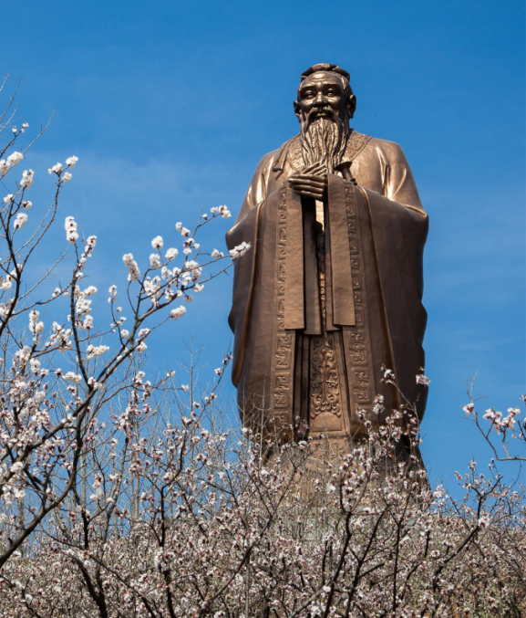

Storia
Cina contro l'oppressione coloniale: Link
Contesto
L’espansione dell’impero britannico aveva raggiunto la Cina. Dopo aver preso possesso stabilmente dell’India e di altre regioni chiave,
l’Inghilterra aveva maturato un interesse verso il grande mercato cinese (motivo di interesse permanente delle potenze occidentali tutt’oggi).
Con i Qing (al potere dal 1640 circa) i porti sud-orientali vennero riaperti e fiorì il commercio internazionale sotto il controllo imperiale.
Gli europei vendevano tessuti di cotone, stagno, piombo e i cinesi vendevano tè, seta, medicine e porcellane ma lo scambio era molto sfavorevole nei confronti degli europei.
Così le autorità britanniche cercarono di convincere la Cina ad aprirsi al mercato mondiale, tentativo che fallì.
Allora, per incrementare le vendite, gli inglesi ricorsero alla vendita dell’oppio coltivato in Bengala, una loro colonia all'est dell'India.
Guerra del'oppio

Ascesa coloniale dell'occidente e declino del Celeste Impero: Link
Dopo un incidente secondo cui un inglese uccise per errore un funzionario cinese, i porti commerciali vennero limitati e l’Inghilterra mandò dei funzionari a trattare la riapertura dei porti, trattativa che finirà in fallimento.
Intanto la vendita dell’oppio in Cina crebbe sempre di più, causando gravi danni economici, morali, sociali e inoltre la vendita dell’oppio aveva diffuso la corruzione e la criminalità organizzata, in particolare provocò la svalutazione del rame rispetto all’argento che significò
un aggravamento delle condizioni di vita dei contadini, infatti essi pagavano le tasse in argento e ricevevano monete in rame per la vendita dei loro prodotti, questa situazione generale ribaltò la situazione commerciale a sfavore della Cina.
I primi provvedimenti presi dall’imperatore furono sanzioni contro il commercio dell’oppio, ma questo non fece altro che aumentare il contrabbando.
Fra i funzionari c’era chi voleva legalizzarlo, chi voleva continuare a mettere sanzioni per il suo spaccio, ma c’era anche chi voleva vietarlo e cercare di eliminarlo dalla circolazione, decisione che alla fine fu presa come l’unica possibile.
Il risultato fu che lo spaccio continuò fino a quando duri provvedimenti cinesi fecero intervenire gli inglesi che diedero inizio alle ostilità, le truppe inglesi occuparono diverse provincie della Cina, tra cui anche Shanghai.
Pace e Conseguenze
Painted by Captain John Platt, Bengal Volunteers: Link
A porre fine alla prima guerra dell’oppio (iniziata nel 1839) fu il trattato di Nánjīng (南京条约) del 1842, che fu il primo dei “trattati ineguali” che stabiliva la cessione di Hong Kong (香港) all’Inghilterra, l’apertura di alcuni porti,
il pagamento di forti indennità e infine, l’Inghilterra aveva il diritto di godere di qualsiasi privilegio che venisse concesso ad un’altra potenza.
Nel 1844 la concessione sarà estesa anche all’America e alla Francia.
Le tensioni sociali che seguirono dall’aggravamento del sistema economico, si sfociarono in una serie di rivolte coma ad esempio la famose rivolta dei Taiping.
Già la crescita della popolazione dal 1800 aveva contribuito ad abbassare il benessere cittadino portando le persone alla poverta (e quindi non furono poche neanche le emigrazioni verso le zone collinari,
il che creò delle tensioni sia fra i nuovi arrivati e la gente stanziata li da tempo sia con il controllo amministrativo che non riusciva a gestire le comunità emigranti), a questa situazione si aggiunsero altre imposte.
Le società segrete che erano a capo delle rivolteche cercarono di portare dei ideali di egualitarismo economico e fra i sessi,
che promuovevano una politica contro la dinastia mancese (volevano il ritorno dei Ming e l’abbattimento dei Qing che non era stata in grado di affrontare gli invasori europei).
Rivolta dei Boxer
Rivolta dei boxer del 1800: Link
Verso la fine dell’800, in Cina, si era formata un’associazione segreta, la Società dei Pugni e dell’Armonia,
i cui membri vennero definiti dagli Occidentali "Boxers" poiché si dedicavano alle arti marziali.
I loro obiettivi erano principalmente due:
- difendere i contadini contro il feudalesimo dei grandi signori
- salvaguardare le tradizioni cinesi contro alla crescente influenza occidentale.
L’orientamento xenofobo della rivolta spinse le bande dei boxer ad azioni violente e massacri contro missionari,
cinesi convertiti al cristianesimo e stranieri, soprattutto nel settentrione della Cina estendendosi fino a Pechino e a Tianjin, dove la presenza di occidentali era numerosa.
Ritorsione sulla Cina
Guglielmo II, ultimo imperatore di Germania e Re di Prussia, dopo questo avvenimento, chiese che Pechino venisse rasa al suolo.
Inoltre, incitò i soldati tedeschi in partenza per la spedizione punitiva, rivolgendo loro queste parole piene d’odio:
"Come mille anni fa gli Unni di Attila si fecero un nome che ancor oggi parla della loro potenza, così il nome di Tedesco in Cina sia da voi reso tale che per mille anni mai più un Cinese osi anche solo guardare di traverso un Tedesco".
Si formò così un corpo di spedizione di 20000 uomini circa, che giunsero fino a Pechino, questo era composto da soldati provenienti da diversi stati europei tra cui: Germania, Italia, Gran Bretagna, Russia, Giappone ecc...
Nel frattempo lo stesso governo imperiale che aveva istigato i Boxers alla violenza era fuggito, e aveva iniziato a
prendere contatti con gli invasori mostrandosi intenzionato a combattere con loro contro i Boxers per sedare la rivolta.
I Boxers, allo sbaraglio e senza più alcun punto di riferimento, pieni d’odio e rancore, furono costretti, un anno più tardi, alla resa.
Il 7 settembre 1901 il governo cinese sottoscrisse i Protocolli dei Boxers con i quali si impegnava a placare ogni movimento
che eventualmente si fosse creato contro gli stranieri, a pagare una notevole indennità e ad accogliere guarnigioni straniere a Pechino e in altre città dell’impero.
Pechino non fu rasa al suolo come aveva auspicato Guglielmo II, ma certamente in questa circostanza non fu risparmiata la violenza, ci furono diversi episodi tra cui: saccheggiamento di opere d’arte locali, incendi di edifici vari, ecc...

Influenza straniera in Cina nel 1900: Link
Fonti:
- https://cincina.blog
- https://it.wikipedia.org
- http://www.instoria.it
Società
Bandiera nazionale dinastia Qing: Link
Contesto:
Nell’ultimo trentennio del XIX secolo, l’espansione delle potenze capitalistiche e le nuove forme di sfruttamento coloniale si scontrarono con una crescente resistenza dei popoli dell’Oriente.
La Cina soffriva di un enorme squilibrio sociale, di stagnazione economica, e di un esplosivo tasso demografico che ridusse la disponibilità di alimenti per il popolo.
Nel 1884, le città portuali cinesi erano aperte al commercio con l’estero; gli stranieri non potevano essere giudicati dai tribunali cinesi e avevano propri quartieri riservati nelle città commerciali (a causa del trattato di NanJing).
La corte dei Manciù e il governo non prendevano nessuna misura per tutelare gli interessi nazionali della Cina dagli attentati compiuti dai colonialisti,
anzi li consideravano loro alleati nella lotta contro il popolo cinese, per conservare il proprio potere nel paese.
Questione Sociale:
Nel 1875 i manciù, pur non superando il numero di 300 mila, costituivano sempre lo strato privilegiato della popolazione e dirigevano i principali organi civili e militari.
Sorsero nel paese nuove classi sociali:
- dai strati sociali dei mercanti, si formò la borghesia cinese
- dai contadini senza terra e dagli operai artigiani poveri, si formò il proletariato cinese.
Quest'ultimo aveva iniziato la sua formazione nelle aziende industriali straniere e perciò comparve prima della borghesia industriale nazionale.
Nelle aziende industriali straniere e cinesi era praticato un intenso sfruttamento degli operai.
La presenza di un esercito di riserva di lavoratori permetteva di pagare un salario misero, di non porre nessun limite alla giornata lavorativa, di praticare largamente punizioni di ogni tipo e imporre multe illegali.
Non meno sfruttate erano le donne e i bambini, pagati con un salario assai misero.
Lo spadroneggiare dei capitalisti stranieri in Cina causò profonda indignazione nel popolo cinese: il paese era teatro di manifestazioni sempre più frequenti contro il governo e gli stranieri.
Particolarmente odiosi al popolo erano i missionari stranieri, che infrangevano le usanze secolari dei cinesi, e s’intromettevano negli affari interni della Cina.
Agli inizi del 1870 nella Cina in generale si scatenarono una serie di manisfestazioni anti-britanniche, danneggiamenti di varie infrastrutture (inglesi, francesi) ecc....
nel 1892-93 altre organizzazioni segrete diressero varie manifestazioni contro gli stranieri in molte città.
Questi scoppi di collera popolare, però, erano spontanei, disorganizzati, e furono perciò rapidamente soffocati dalle autorità.
La dura guerra del 1894-95 contro il Giappone, conclusasi con la sconfitta della Cina e con il trattato di Shimonoseki, causò in Cina una violenta ondata di malcontento popolare.
La popolazione di Taiwan insorse contro la decisione del governo manciù di cedere l’isola ai giapponesi e nel maggio 1895 venne proclamata a Taiwan la repubblica.
L’insurrezione popolare venne però soffocata e le truppe giapponesi, che occuparono l’isola.
I “Cento Giorni Delle Riforme”

Esecuzione dei funzionari "ribelli": Link
L’inizio della spartizione della Cina da parte delle potenze imperialiste diede nuovo slancio al movimento riformatore tra la borghesia e i proprietari terrieri, che, nel 1898, costituirono nella capitale varie unioni e associazioni.
Nell’aprile si tenne a Pechino, un’assemblea costitutiva di una nuova organizzazione patriottica cinese di fautori delle riforme, la “Società per la difesa dello Stato”, che era di fatto un partito di borghesi e proprietari liberali, che volevano ottenere,
mediante varie riforme, un rafforzamento della Cina e l'espulsione dei colonialisti stranieri.
Il partito delle riforme ottenne l’appoggio del giovane imperatore Kuang Hsü, che mirava a liberarsi della tutela dell’imperatrice Tzu Hsi e dei dignitari da lei nominati, per impadronirsi di tutto il potere.
Il giovane imperatore emanò nel giugno 1898 un decreto, che aprì un periodo di breve durata - 102 giorni - in cui si cercò d'introdurre varie riforme in Cina (i “cento giorni delle riforme”).
Al primo decreto ne seguirono altri 70, per incoraggiare lo sviluppo dell’industria, dell’agricoltura e del commercio, per aprire varie scuole, ecc...
Dalle province vennero indirizzati al governo numerosi progetti e proposte per la democratizzazione del regime sociale, per la lotta contro la corruzione e l’arbitrio delle autorità e per altre riforme.
Gli autori di questi progetti insistevano sulla immediata instaurazione di un governo costituzionale e sulla convocazione di un’Assemblea costituente per dar vita a un regime parlamentare.
Il partito delle riforme era però troppo debole per vincere la resistenza del campo reazionario feudale, che godeva dell’appoggio dell’imperatrice e d’influenti dignitari di corte.
Così nella speranza di realizzare i propri obiettivi con un colpo di stato, i suoi leader decisero di arrestare i reazionari più in vista, ma il generate Yuan Shihkai, al quale Kuang Hsü e i riformatori avevano affidato l’esecuzione dell’ordine d’arresto, li tradì.
Il 21 settembre 1898 Tzu Hsi, con l’appoggio della Guardia di palazzo, fece arrestare Kuang Hsü ed emanò un decreto, che ripristinava la reggenza e abrogava le riforme.
Alcuni giorni dopo vennero giustiziati a Pechino diversi dirigenti del partito delle riforme e decine di altri esponenti vennero perseguitati.
Fonti:
- https://www.cambridge.org
- https://cincina.blog
- https://www.britannica.com
Cultura
Buddha di Ling Shan 靈山大佛: Link
Introduzione
La maggior parte dei valori sociali cinesi sono derivati dal confucianesimo e dal taoismo.
La questione di quale scuola fosse la più influente è sempre dibattuta, perché si sono create varie correnti come neoconfucianesimo, buddhismo, reincarnazione, rinascita ecc.
Nella cultura cinese degli affari, il concetto di guanxi (关系), che indica la primazia delle relazioni sulle regole.
Il confucianesimo fu la filosofia ufficiale durante la maggior parte della storia imperiale della Cina e la padronanza dei testi confuciani era il criterio primario per l'ingresso nella burocrazia imperiale.
Anche numerose correnti di pensiero più autoritarie sono state influenti, come il legalismo.
Vi fu spesso conflitto tra le filosofie: per esempio, i neoconfuciani della dinastia Song credevano che il legalismo deviasse dallo spirito originale del confucianesimo.
Gli esami e la cultura del merito rimangono oggi grandemente apprezzati in Cina.
In anni recenti molti nuovi confuciani (da non confondere con il neoconfucianesimo) hanno sostenuto che gli ideali democratici e i diritti umani sono alquanto compatibili con i tradizionali "valori asiatici" confuciani.
Con l'ascesa del potere economico e militare europeo iniziata a metà del XIX secolo i sistemi non cinesi di organizzazione sociale e politica guadagnarono sostenitori in Cina.
Alcuni di questi potenziali riformatori rifiutavano totalmente l'eredità culturale della Cina, mentre altri cercavano di combinare i punti di forza della cultura cinese ed europea.
In essenza quella della Cina del XX secolo è una storia di sperimentazione di nuovi sistemi di organizzazione sociale, politica ed economica che avrebbero consentito la reintegrazione della nazione sulla scia del collasso dinastico.
Buddismo
Il Buddhismo nacque grazie all'aristocratico Siddhartha Gautama, detto il Buddha (Illuminato) nel VI secolo che mantenne 2 principi fondamentali dell'Induismo: la reincarnazione e il karma.
Secondo il Buddha l'uomo vive nel dolore che potrà essere eliminato solo con l'eliminazione del piacere attraverso 5 regole morali:
- non commettere violenza;
- non ingannare il prossimo;
- non rubare;
- non usare sostanze inebrianti;
- non commettere adulterio.
Chi osserva queste regole è destinato alla pace interiore: nirvana.
Questa religione è diffusa in molti paesi tra i quali la Cina.
Nel XX secolo il buddhismo ha subìto persecuzioni in Mongolia, Cina, Tibet e Indocina.
Confucianesimo

Confucio 孔夫子: Link
Il Confucianesimo nacque grazie al filosofo Kongfuzi (Confucio) e non è una religione, ma una filosofia di vita che vede a capo dell'ordine cosmico l'Uomo, la Terra e il Cielo che sono esseri indivisibili e nati da un unico principio legislatore.
Inoltre Confucio riteneva che la decadenza politico-morale della Cina fosse dovuta alla rottura del legame fra quei 3 elementi fondamentali e per questo bisognava tornare agli antichi costumi rispettando le regole sociali e morali di quei tempi.
Il Confucianesimo è diffuso in Cina, Corea, Vietnam e Giappone, anche se fu rifiutato agli inizi del XX secolo in Cina da coloro che volevano un innovamento socio-culturale della Cina.
Fonti:
- https://it.wikipedia.org
- https://www.skuola.net.
Potere
Bodgykhan, Figlio Celeste: Link
Ideologia dietro all’impero
La politica interna della Cina negli anni del 1800 era basata sull'ideologia secondo la quale l'imperatore, bogdykhan, era il Figlio del Cielo, colui che riceveva un mandato dalle più alte forze per governare il paese.
Secondo questo concetto, tutti gli abitanti del paese erano ridotti al livello dei suoi figli, che erano obbligati ad obbedire a qualsiasi suo comando.
Sistema gerarchico
La struttura sociale era una specie di piramide al cui vertice troviamo l’imperatore, che godeva di un potere illimitato.
Nella sua diretta subordinazione c'erano: la Cancelleria suprema, così come i consigli statali e militari.
Sotto di lui c'era un cortile interamente costituito da persone a lui imparentate.
Una parte significativa del bilancio dello stato era destinata a mantenere un esercito molto numeroso.
Storia della dinastia regnante: Qing
A metà deI secolo la Cina subì un'invasione di Manciù, che portò la famiglia regnante “Ming” ad essere sostituita dai governanti del clan “Qing”, che fecero di Pechino la capitale dello stato,
e tutti i posti chiave nel governo furono occupati dai discendenti dei conquistatori e da coloro che li sostenevano.
Territori inglesi
Hong Kong, XIX secolo: Link
Al territorio cinese, nel 1842 tramite il trattato di Nanjing che pose fine alla prima guerra dell’oppio, venne sottratta Hong Kong, la quale passò alle mani dell’Inghilterra.
Al termine della seconda guerra dell’oppio (1860-1864) Londra ottenne anche l’isola di Kowloon.
Fonti Testo:
- www.wikipedia.com
- www.sodiummedia.it
Libro di testo: Nuovo dialogo con la storia e l'attualità
Fonti immagini:
- www.britannica.com
- www.china.usc.edu
Timeline
Settembre 1839
Inizio Prima Guerra dell'Oppio.
Agosto 1842
Trattato di Nánjīng.
Ottobre 1856
Seconda Guerra dell'Oppio.
Giugno 1898
Cento Giorni Delle Riforme
Novembre 1899
Rivolta Dei Boxer.
Settembre 1901
Fine Rivolta dei Boxer,
firma del “Protocollo dei Boxer”.